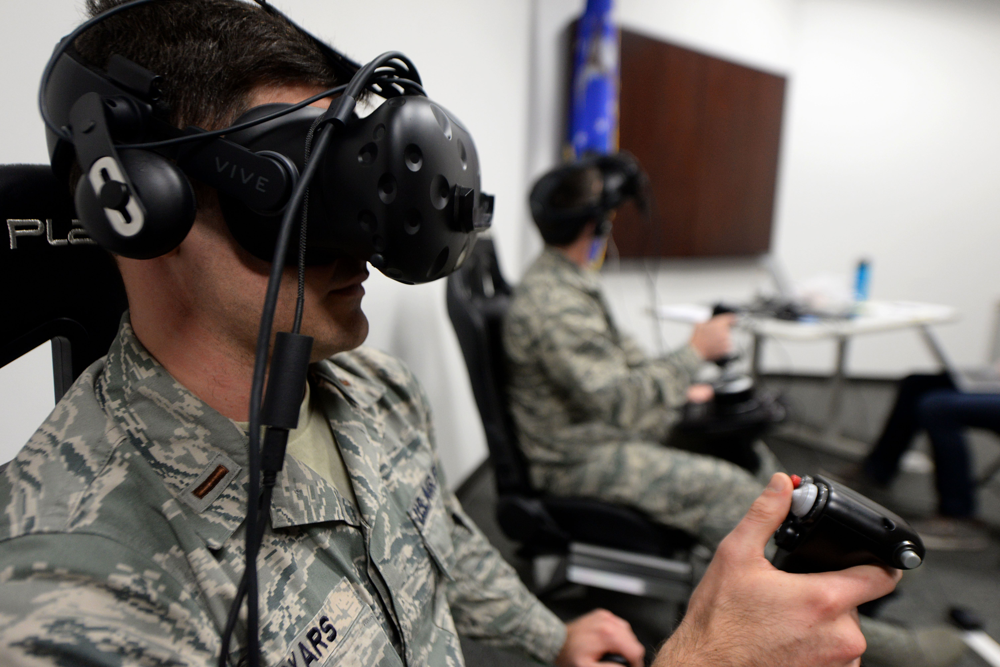

Our goals were to build a tool that would allow the satelite operator to enter the VR visualization environment when they receive an alert. By doing so, they can quickly navigate the satelites and trajectories to make a decision on changing trajectories as well as monitor proximity operations and orbital activity.
We spent 4 days on a design sprint to identify key needs, interfaces, and implement a system in VR. We used an HTC Vive Pro and a Leap Motion hand tracking module. We started with a dataset of about 18,000 satellites. Four hundred synthetic objects were also included with simulation of space events and full trajectories. We took all of this data and processed it in Unity. Using the data we created trajectories and positions for all of the satellites. In addition to this, we added some synthetic metadata to each satellite such as country of origin, latest maneuvers, and manufacturing details.

Overview
The system that we called C.O.S.M.I.C. (Command, Sensing, and Mapping Information Center) consists of two key viewpoints. A world view which shows an overview of the earth and all of the satelites and a satelite view. The satelite view can be pulled up for a specific satelite or space event, showing the trajectorie(s) and specific satelite details.
Interface
The overall design principle for the interface was to be as natural and life like as possible. With the Leap Motion, we were able to add hand tracking and hand interactions. A flick of the wrist pulls up a mini dashboard and menu buttons. This dashboard provides the most critical information. One toggle button brings up the filter menu allowing the user to filter/toggle HEO, LEO, and GEO satellites.
I designed this UI that shows up when a particular satellite is selected.
This shows the alert interface that pops up.
The prototype video shows an interaction example and our design philosophies. After building the prototype, we worked with the Air Force on a one week design sprint with Air Force operators in Colorado Springs. There we more clearly understood their needs, and with further input, ideated on how to improve their current system. A key area of interest was sharing and communicating rendezvous incidents of Courses or Action (C.O.As) when multiple parties such as the Air Force Space Command and NASA are working together.
Overview
The system that we called C.O.S.M.I.C. (Command, Sensing, and Mapping Information Center) consists of two key viewpoints. A world view which shows an overview of the earth and all of the satelites and a satelite view. The satelite view can be pulled up for a specific satelite or space event, showing the trajectorie(s) and specific satelite details.Interface
The overall design principle for the interface was to be as natural and life like as possible. With the Leap Motion, we were able to add hand tracking and hand interactions. A flick of the wrist pulls up a mini dashboard and menu buttons. This dashboard provides the most critical information. One toggle button brings up the filter menu allowing the user to filter/toggle HEO, LEO, and GEO satellites.I designed this UI that shows up when a particular satellite is selected.
This shows the alert interface that pops up.
The prototype video shows an interaction example and our design philosophies. After building the prototype, we worked with the Air Force on a one week design sprint with Air Force operators in Colorado Springs. There we more clearly understood their needs, and with further input, ideated on how to improve their current system. A key area of interest was sharing and communicating rendezvous incidents of Courses or Action (C.O.As) when multiple parties such as the Air Force Space Command and NASA are working together.
Taking our prototype and our ideas, the Air Force Research Lab is working on implementing new visualization techniques.
